2026年9月，习近平就建设更高水平平安中国作出重要指示。关于新征程上平安中国建设，下列说法错误的是（）。
A.坚定不移贯彻总体国家安全观，坚持和加强党的全面领导
B.统筹发展和改革
C.注重惩防并举、标本兼治，强化法治支撑、科技赋能
D.在国家更加安全、社会更加有序、治理更加有效、人民更加满意上持续用力
统筹发展和安全，故本题答案为 B。平安中国建设工作会议2026 年 9 月 28 日在京召开。在党中央坚强领导下，平安中国建设成就举世公认，“平安”已成为“中国之治”的显著标志。习近平指出，党的十八大以来，平安中国建设取得显著成效，人民安居乐业、社会安定有序的良好局面更加巩固，我国成为世界上最安全的国家之一。习近平强调，新征程上，要以新时代中国特色社会主义思想为指导，坚定不移贯彻总体国家安全观，坚持和加强党的全面领导，统筹发展和安全，注重惩防并举、标本兼治，强化法治支撑、科技赋能，加强国家安全体系和能力建设，提高公共安全治理水平，完善社会治理体系，防范化解各类风险。
2026年9月23日，教育部表示，将启动教师发展国家行动。下列说法错误的是()。
A.启动实施的“国优计划”，已支持43所高水平研究型大学加入教师培养行列，开辟高素质教师培养新赛道
B.落实健康第一根本任务和立德树人育人新理念，改革实施“国培计划”，推动高水平大学与优质中小学校协同开展高质量培训
C.健全中小学教师工资待遇共保联动机制，绩效分配向教学一线、担任班主任和扎根乡村的教师倾斜
D.动态扩充惠师服务清单，推进社会公共服务“教师优先”
落实立德树人根本任务和健康第一育人新理念，改革实施“国培计划”，推动高水平大学与优质中小学校协同开展高质量培训。故本题答案为B。
习近平总书记强调，就业是最基本的民生，事关人民群众切身利益，事关经济社会健康发展，事关国家长治久安。要实施就业优先战略，促进高质量充分就业。关于促进高质量充分就业，下列表述正确的是（）。
①在宏观层面，高质量充分就业主要包括就业机会充分、就业环境公平、就业结构优化、人岗匹配高效、劳动关系和谐等
②在微观层面，高质量充分就业主要表现为每个公民不仅有活干，而且工作稳定、收入合理、保障可靠、职业安全等
③高质量充分就业是一个很高的要求，也是一个循序渐进的过程，必须尽力而为、量力而行；必须充分调动人民群众的积极性主动性创造性，引导大家依靠努力奋斗创造幸福生活
④促进高质量充分就业。要始终坚持就业优先，着力解决结构性就业矛盾，完善重点群体就业支持政策，深化就业体制机制改革，加强劳动者权益保障
A.②③④ B.①②④ C.①③④ D.①②③
在宏观层面，高质量充分就业主要包括就业机会充分、就业环境公平、就业结构优化、人岗匹配高效、劳动关系和谐等；在微观层面，高质量充分就业主要表现为劳动者不仅有活干，而且工作稳定、收入合理、保障可靠、职业安全等。②说法中“每个公民”说法错误，应为“劳动者”。①③④说法正确，故本题答案为 C。
习近平总书记强调，要坚持走中国特色社会主义法治道路，建设中国特色社会主义法治体系。关于中国特色社会主义法治体系，下列说法正确的是（）。
①合宪性审查制度的确立是依法治国、依法执政的重要举措
②我国的立法体制机制主要是通过《中华人民共和国宪法》规定的
③建设中国特色社会主义法治体系是全面依法治国的总抓手
④党内法规体系是中国特色社会主义法治体系的有机组成部分
A.①②③ B.①②④ C.①③④ D.②③④
合宪性审查制度确立是依法治国依法执政的重要举措，建设中国特色社会主义法治体系是全面依法治国总抓手，党内法规体系是有机组成部分，均表述正确。但我国立法体制机制主要通过《中华人民共和国立法法》规定而非宪法，宪法规定的是立法权限划分，立法法规定的是具体体制机制。 ①③④说法正确，故本题答案为 C。
2026年6月15日，全国党建工作座谈会召开。会议认为，党的十八大以来党中央提出一系列新理念新思想新战略，形成习近平党建思想。下列关于习近平党建思想的科学内涵，说法正确的是（）。
A.“坚持以党的思想建设为统领”是新时代党的建设的根本要求
B.“坚持用党的创新理论凝心铸魂”是党的思想建设的首要任务
C.“坚持一体推进不敢腐不能腐不想腐”是保持党同人民群众血肉联系的有效途径
D.“坚持制度治党、依规治党”是全面从严治党的长远和根本之策
A 项说法错误：“坚持以党的政治建设为统领”是新时代党的建设的根本要求。B 项说法错误：“坚持用党的创新理论凝心铸魂”是党的思想建设的根本任务。C 项说法错误：“坚持推进作风建设常态化长效化”是保持党同人民群众血肉联系的有效途径。“坚持一体推进不敢腐不能腐不想腐”是全面从严治党的重要方略和反腐败斗争的基本方针。故本题答案为 D。“十四个坚持”是习近平党建思想提出的内容。“十四个坚持”，深刻把握管党治党、兴党强党和强国复兴的内在联系，统筹党的领导和党的建设，是对习近平总书记关于新时代党的建设具有标志性引领性的新理念新思想新战略的集中概括。主要内容如下：“坚持党的领导是中国特色社会主义最本质的特征”；“坚持党中央集中统一领导”是党的领导的最高原则；“坚持全面从严治党”是新时代党的建设的战略方针；“坚持不忘初心、牢记使命”是党的宗旨立场和价值取向；“坚持以党的政治建设为统领”是新时代党的建设的根本要求；“坚持用党的创新理论凝心铸魂”是党的思想建设的根本任务；“坚持锤炼坚强党性”是党员、干部的终身课题；“坚持健全上下贯通、执行有力的组织体系”是党的优势所在、力量所在；“坚持建设堪当民族复兴重任的高素质干部队伍”是关系党和国家事业的关键性问题；“坚持推进作风建设常态化长效化”是保持党同人民群众血肉联系的有效途径；“坚持用严明的纪律管全党治全党”是全面从严治党的治本之策；“坚持一体推进不敢腐不能腐不想腐”是全面从严治党的重要方略和反腐败斗争的基本方针；“坚持制度治党、依规治党”是全面从严治党的长远和根本之策；“坚持落实管党治党政治责任”是全面从严治党需要牢牢牵住的“牛鼻子”。
2026年9月16日上午，西部陆海新通道骨干工程——平陆运河正式通航。关于此项工程创造的“世界之最”，说法正确的有（）。
①世界同类运河通航能力最强
②世界同类船闸通航速度最快
③世界省水船闸落差最高
④世界内河省水船闸规模最大
A.1 项 B.2 项 C.3 项 D.4 项
2026 年 9 月 16 日上午，西部陆海新通道骨干工程——平陆运河正式通航。工程项目创造了四项“世界之最”：世界同类运河通航能力最强、世界同类船闸通航速度最快、世界省水船闸落差最高、世界内河省水船闸规模最大。故本题答案为 D。【内河省水船闸，简单说就是一种能把过闸用的水存起来重复利用的船闸。普通船闸每次让船通过都要放掉大量水，省水船闸在旁边建了蓄水池，把水存下来下次再用，特别适合水资源紧张的地方。】
在绩效考核中，一个考核者对被考核者的某一绩效要素的评价较高，就会导致她对该人所有的其他绩效要素也评价较高；反之，如果对被考核者的某一绩效要素的评价较差，则会导致他对该人所有的其他绩效要素也评价较差。这被称为（）。
A.首因效应 B.近因效应 C.晕轮效应 D.定型效应
本题考查决策的心理效应。A 项，首因效应指交往双方形成的第一次印象对今后交往关系的影响。A 项错误，不选。B 项，近因效应是指在交往过程中最近一次接触给人留下的印象对社会知觉者的影响作用。B 项错误，不选。C 项，晕轮效应是指在人际知觉中形成的以点概面或以偏概全的主观印象。在绩效考核中，一个考核者因对被考核者的某一绩效要素的评价高低导致对其他绩效要素的评价高低，体现了晕轮效应。C 项正确，当选。D 项，定型效应是指人头脑中存在的、关于某一类人的固定形象。D 项错误，不选。故本题答案为 C。
某公务员钱某饮酒后驾驶机动车交通肇事，后经检测构成醉驾。根据相关法律的规定，以下关于该公务员可能受到的处理或承担的法律责任，正确的是（）。
①监察机关对公务员钱某进行政务处分
②司法机关追究公务员钱某的刑事责任
③公安机关交通管理部门对钱某进行相应的行政处罚
④若交通肇事中的受害人提起民事诉讼，人民法院还可能追究钱某的民事责任
A.1 项 B.2 项 C.3 项 D.4 项
本题考查法律知识。根据相关规定，对酒后驾驶机动车的国家机关工作人员，除按照交通安全法处罚外，还应进行党纪政纪处分。同时因为构成醉驾，违反刑法的规定，也可能承担相应刑事责任。肇事者对受害人还需承担民事责任。故本题答案为 D。
某县税务机关对公民甲征税时，甲拒不缴纳应缴税款，于是，税务机关对甲实施了行政拘留。针对税务机关的这一行为，下列说法正确的是（）。
A.该税务机关的行为违反了合理行政原则
B.税务机关的行为违反了“法无授权即禁止”的原则
C.税务机关违反了诚实信用原则
D.针对甲的抗税行为，税务机关有权实施行政拘留
本题考查行政法的基本原则。合理行政原则的主要含义是行政决定应当具有理性，属于实质行政法治的范畴，尤其适用于裁量性行政活动，包含考虑相关因素、公平公正和比例原则。题干中与合理行政原则不符合。A 项错误，不选。所谓的法无授权即禁止，是指国家公权力的行使必须经过法律授权。《行政处罚法》（2021）第 18 条第 3 款规定：“限制人身自由的行政处罚权只能由公安机关和法律规定的其他机关行使。”税务机关不具有行政拘留的权力，因其未经法律授权。B 项正确，当选；D 项错误，不选。诚实信用原则要求行政信息真实和保护信赖利益。题干中税务机关的措施与诚信无关。C 项错误，不选。故本题答案为 B。
下列说法中，错误的是（）。
A.小刚喜欢观察月相，他观察上弦月的最佳时间应是农历每月上半月的上半夜
B.小亮若乘宇宙飞船飞到金星上，他会看到太阳是从西面升起，并向东方落下
C.小明10岁时裸眼看见过一次哈雷彗星，若他能活到90岁，还可能裸眼见一次
D.小林对类地行星具有深厚的研究兴趣，因此他应重点研究水星、木星和土星
上弦月是指月亮上半夜出来，在偏西面出来，月面朝西的状态。上弦月的日期是农历初七初八左右。A 项说法正确。金星自转方向与其它行星相反，是自东向西。因此，在金星上看，太阳是西升东落。B 项说法正确。哈雷彗星的周期是76 年，因此小明 10 岁时祼眼看见过一次哈雷彗星，若他能活到90 岁，还可能裸眼见一次。C 项说法正确。类地行星包括水星、地球、火星和金星，木星不属于类地行星。D项说法错误。故本题答案选 D。
下列地质景观与景区对应错误的是（）。
A.丹霞地貌——贵州赤水 B.火山口湖——云南洱海 C.花岗岩山地——黄山莲花峰 D.喀斯特地貌——云南石林
洱海属于构造湖，是喜马拉雅地壳运动的产物。大约到了5000多万年前的早第三纪时期，印度板块从冈瓦纳古陆分离出来，向北漂移与欧亚大陆发生激烈碰撞，引发了大面积的造山运动，受东西两侧深大断裂带挟持，差异性抬升运动形成，东侧洱海是断陷形成的构造湖泊，大约在 350 万年前已成雏形，以后洱海经历了不同年代的大小演化，终于形成了今天的高原湖泊。故本题答案选B。
下列关于中国古代艺术成就的说法，正确的是（）。
A.唐代时书法开始成为艺术，出现了著名的“颜筋柳骨”
B.中国古典乐器分为吹、奏、弹、唱四类
C.安徽地区的主要地方戏曲剧种是豫剧
D.东晋画家顾恺之的人物画强调传神，注重点睛，其代表作有《洛神赋图》
本题考查古代传统艺术。A 项，汉字书写发展成为真正自觉的书法艺术是在汉末魏晋之间，唐代是我国书法艺术发展的鼎盛时期。“颜筋柳骨”中“颜”指颜真卿，“柳”指柳公权。“颜筋柳骨”是说他们二人的风格像筋、骨那样挺劲有力。 A项错误，不选。B 项，中国古典乐器分为吹、拉、弹、打四类。B 项错误，不选。C 项，安徽地区的主要地方戏曲剧种是黄梅戏。豫剧是流行于河南地区的剧种。C 项错误，不选。D 项，顾恺之是东晋画家，多作人物肖像及神仙、佛像、禽兽、山水等。画人强调传神，注重点睛。其画作《女史箴图》《洛神赋图》等堪称珍品。D 项正确，当选。故本题答案为 D。
辛弃疾所作《生查子·独游雨岩》写道：“溪边照影行，天在清溪底。”下列诗句中与此情景体现的物理原理一致的是（）。
A.举杯邀明月，对影成三人 B.潭清疑水浅，荷动知鱼散 C.独行潭底影，数息树边身 D.香炉初上日，瀑水喷成虹
“溪边照影行，天在清溪底”的意思是人在溪边行走，溪水映照出人影，蓝天倒映在清澈的溪水里。该诗句体现的物理原理是光的反射。光的反射指光在两种物质分界面上改变传播方向又返回原来物质中的现象。光在水面、玻璃以及其他许多物体的表面都会发生反射。A 项错误：“对影成三人”（月亮、诗人及其影子被认为“三人”）中的影子是由光的直线传播形成的。光在同种均匀介质中沿直线传播，当遇到障碍物遮挡时，由于光线不能穿过而在障碍物后形成阴影区，称为影子。B 项错误：“潭清疑水浅”的意思是潭水清澈见底，因此疑心潭水很浅。这是因为光线从水中斜射入空气中时会发生折射，且折射角大于入射角，折射光线远离法线，因此，人会感觉池水变浅（见下图）。C 项正确：“独行潭底影，数息树边身”的意思是潭水中倒映着他独行的身影，他多次身倚树边休息。该句体现的物理原理是光的反射，与题干一致。D 项错误：“香炉初上日，瀑水喷成虹”的意思是香炉峰升起一轮红日，飞瀑映照幻化成彩虹。彩虹是由光的色散形成的，它的形成需要两个条件：①空气中有小水滴；②有太阳光。阳光照射到小水滴上时，会发生折射和反射（阳光进入水滴，先折射一次，然后在水滴的背面发生反射，最后离开水滴时再折射一次，总共经过一次反射两次折射），由于不同波长的光折射率有所不同，折射角也不同，于是各色光就分离开，形成彩虹。故正确答案为C。
在快速扩张下，零售业发展容易出现“千店一面”布局。以“便利”为核心的便利店，为了满足消费者________的日常需求，大部分商品的同质化是________的。但如何在同质的基础上打出差异化竞争的好牌，则必须依托缜密的战略布局。依次填入画横线部分最恰当的一项是（）。
A.多样 众所周知 B.强大 大势所趋 C.稳定 无可厚非 D.基本 迫不得已
第一空，根据“日常需求”以及“大部分商品同质化”可知，由于消费者的日常需求没有大的变动，才会导致商品同质化，故此处表达日常需求变动不大之意。A 项“多样”意为多种样式，与后文“同质化”矛盾，排除；B 项“强大”意为力量坚强雄厚，不能体现需求变动不大之意，排除；C 项“稳定”意为稳妥固定，没有变动，可和后文“同质化”构成对应，D 项“基本”意为根本的，“基本的日常需求”也可以体现出需求变动不大之意，两项均符合文意，保留。第二空，根据“为了满足消费者的日常需求”以及“如何在同质的基础上······”可知商品同质化为基础，是客观需求之意。C 项“无可厚非”意为虽有缺点，但是可以理解，符合文意，当选；D 项“迫不得已”意为出于被迫不由得不那样做，文段并未体现商家出于被迫，故该项不符合文意，排除。故正确答案为 C。
随着军事技术的飞速发展，战争形态、作战理论等正在发生全方位的________，传统的战役理论遭受巨大冲击，特别是近年来的局部战争出现了小规模精巧作战等全新的作战行动，加之________的作战概念，这都需要我们用系统的思维、发展的眼光，对战役理论重新________。依次填入画横线部分最恰当的一项是（）。
A.更迭 另辟蹊径 谋划 B.革新 莫可名状 诠释 C.转变 扑朔迷离 规划 D.变革 眼花缭乱 审视
本题从第二空入手，“加之”表示并列，前文指出军事技术的发展促使战争形态和作战理论等有升级和更新，出现不少全新的作战行动，故横线处所填词语体现“作战概念”有复杂多变、更新迭代的特点，A 项“另辟蹊径”指另创一种风格或方法，能体现“更新”的特点，保留；D 项“眼花缭乱”指事物纷繁多样，无法辨清，同“概念”搭配恰当，且能体现“复杂”“多样”的含义，保留；B 项“莫可名状”指事物极复杂微妙，无法描述，程度过重，文段并未提及作战概念不可用言语描述，排除；C 项“扑朔迷离”指事物错综复杂，不容易看清真相，与“作战概念”搭配不当，排除。第三空，搭配“战役理论”，横线处所填词语应体现对传统作战理论用新的思维和发展眼光去分析判断的含义，D 项“审视”意思是仔细地看，反复分析，符合文意，当选；A 项“谋划”意为筹划、想办法，与“战役理论”搭配不当，排除。代入验证第一空，根据前文“军事技术的飞速发展”，故横线处应体现作战理论、形态也在发生变化，D 项“变革”指改变事物的本质，符合文意。故正确答案为 D。
充分保障业主“炒掉物业”的权利，背后实际上涉及一系列微观治理机制的厘清和完善。成立业主委员会的门槛如何优化，基层部门如何为业主权利的保障提供更积极的配合，对于业主与物业的“纠纷”如何构建高效、权威的外部调解机制，针对物业企业的市场规范又还有哪些制度“漏洞”需要补上，这些都有待于更系统的梳理。而当业主“炒掉物业”不再具备新闻价值，或就证明相关调整真正达致了理想状况。下列说法与上文意思相符的是：
A.业主“炒掉物业”已不再具备新闻价值
B.要通过改革来保障业主权利和规范物业服务
C.物业管理属于市场行为，政府不应介入
D.完善内部调节机制更有利于解决业主与物业的纠纷
A 项，根据“而当业主‘炒掉物业’不再具备新闻价值，或就证明相关调整真正达致了理想状况”可知，相关调整达到理想状况时，“炒掉物业”才不具备新闻价值，并非目前已不再具备新闻价值，表述时态错误，排除；B 项，根据“充分保障业主‘炒掉物业’的权利，背后实际上涉及一系列微观治理机制的厘清和完善 · · · · · ·这些都有待于更系统的梳理”可知，“保障业主权利和规范物业服务”需要优化业主委员会成立门槛、构建外部调解机制等一系列改革举措，符合文意，当选；C 项，根据“基层部门如何为业主权利的保障提供更积极的配合”可知，政府应该介入，故“政府不应介入”表述与文意相悖，排除；D 项，根据“对于业主与物业的‘纠纷’如何构建高效、权威的外部调解机制”可知，构建的是外部调解机制，而非内部调节机制，概念偷换，排除。故正确答案为B。
动物园的发展和转型，折射出人们对人与动物关系认知的变化。最初，动物园的出现，是为了满足人们对那些难以接触到的动物的好奇心。随着社会的发展和人们生态意识的增强，人们不再热衷于“参观笼子里的动物”，而是希望动物园回归原生态，变成动物的家园乃至乐园，“人去动物家做客”正成为越来越受推崇的理念。这意味着动物园也要转变管理理念，取消动物表演、拆掉笼子、改善动物生存状态……让动物们能更有尊严、更自由地生活。这段文字意在强调：
A.动物园经营管理应以动物为本善待动物 B.动物园经营要兼顾经济效益和社会效益 C.动物园经营需要及时了解大众消费心理 D.动物园应是动物保护和生命教育的园地
文段开篇指出动物园的发展折射出人们对人与动物关系认知的变化，接着阐述随着社会发展和生态意识增强，人们希望动物园回归原生态，尾句通过“这意味着”总结前文并给出对策，强调动物园要转变管理理念，让动物们能更有尊严、更自由地生活，对应 A 项。B 项“兼顾经济效益和社会效益”、C 项“了解大众消费心理”及 D 项“生命教育的园地”文段均未提及，无中生有，排除。故正确答案为 A。
随着时代发展，匠人制作漆器使用的材料也不断突破，如今，人工合成材料已被运用到漆器制造领域。脱胎工艺是漆艺中的重要一环。我国科研人员尝试使用人工合成材料制作葫芦瓶母胎，用高密度EPS材料替代笨重的木胎，并用三维雕刻机将EPS材料雕刻成大葫芦造型。使用三维雕刻机加工EPS材料，获得的造型更精准，成本也更低。造型完成后，再继续进行传统手工裱布刮灰步骤，重复该步骤5次制成夹纻胎。最后，利用EPS材料遇到稀释剂或汽油会溶解的特性，便能轻松从夹纻胎中取出大葫芦造型。这段文字旨在说明：
A.我国漆器制造技术创新兼顾传统核心技艺传承
B.我国漆器脱胎工艺运用人工合成材料技术成熟
C.高密度EPS材料在漆器脱胎工艺中有多种优势
D.高密度EPS材料已被应用于漆器制造的全流程
文段首句引出人工合成材料进入漆器制造领域的话题，接着介绍脱胎工艺是漆艺重要环节，我国科研人员采用人工合成材料——高密度 EPS 材料制作葫芦瓶母胎，后文指出利用高密度EPS 材料制作母胎具有造型更精准、成本更低，制成夹纻胎之后可利用其材料特性实现轻松脱胎等多重优势。故文段重点围绕核心话题“高密度 EPS 材料”和“漆器脱胎工艺”展开论述，强调高密度 EPS 材料在漆器脱胎工艺中具备的多重优势，对应 C 项。A 项，“兼顾传统核心技艺传承”仅对应文中“传统手工裱布刮灰步骤”，并非文段重点，排除；B 项，文中仅强调“尝试使用”，“技术成熟”无中生有，排除；D 项，文段只介绍了“脱胎工艺”这一个环节，“应用于漆器制造的全流程”文段并未体现，无中生有，排除。故正确答案为 C。
钙钛矿太阳能电池属于新概念太阳能电池。经过多年发展，这类电池的效率得到显著提升，但是稳定性仍是一道难题。最近，科学家首次发现钙钛矿阳离子面外分布不均匀是影响电池性能的主要原因。研究团队通过研究设计制备出均匀化的钙钛矿薄膜，获得了最高达26.1%的光电转换效率。这一研究开辟了提升电池器件稳定性的新途径，为进一步得到高效、稳定的钙钛矿太阳能电池提供了明确方向。对这段文字主旨概括最恰当的一项是：
A.钙钛矿太阳能电池研发已取得突破性进展 B.钙钛矿太阳能电池稳定性差的原因被发现 C.钙钛矿太阳能电池稳定性难题被有效破解 D.钙钛矿太阳能电池发展前景将更高效稳定
文段开篇引出“钙钛矿太阳能电池”的话题，随后通过转折词“但是”指出其在稳定性上存在问题，并分析了问题的原因，随后给出对策“均匀化的钙钛矿薄膜”，尾句指出该做法能提升电池器件稳定性，为进一步得到高效、稳定的钙钛矿太阳能电池提供了明确方向。故文段重在强调科学家解决了钙钛矿太阳能电池稳定性难题，对应 C 项。A 项，“已取得突破性进展”表述不明确，缺少“稳定性”这一核心话题，排除；B 项，“稳定性差的原因被发现”非重点，排除；D 项，文段仅提及当前的研究为实现高效、稳定的钙钛矿太阳能电池提供了方向，“发展前景将更高效稳定”无中生有，排除。故正确答案为 C。
①家长们要树立正确理念，利用节假日有意识、有目的地为孩子参加各种劳动创造机会
②家庭是劳动实践的最佳场所，洗衣做饭、扫地擦桌、整理房间、侍弄花草等都是很好的实践机会
③包办代替不是爱，是剥夺，既剥夺了孩子劳动实践的机会，又剥夺了孩子能力形成的时机
④我们要抓住衣食住行等日常生活中的劳动实践机会，鼓励孩子自己自觉参与、自己动手，掌握必要的家务劳动技能和生活技能
⑤长期以来，“万般皆下品，唯有读书高”的育人观，或过分宠爱的护犊情节，导致许多家长不重视孩子的劳动实践
⑥家务劳动要么请钟点工，要么家长自己完成，剥夺了孩子实践的机会
将以上6个句子重新排列，语序正确的是（）。
A.③②⑤④①⑥ B.④⑥⑤③①② C.①④⑥②⑤③ D.②⑤⑥④③①
对比选项，判断首句，①句④句为对策表述强调要让孩子参与劳动，③句为问题表述，对策应在问题之后，故①句④句不适合做首句，排除 B.C两项。②句引出家庭劳动话题，③句指出包办代替的坏处，不好判断。观察文段，⑤句指出家长不重视孩子劳动实践的问题，⑥句指出家长剥夺孩子劳动实践机会的问题，均为问题表述，应在①④对策之前，排除 A 项。故正确答案为 D。
①所谓“敬畏伦理”是指社会要求人们在面对具有必然性、神圣性对象时必须态度崇敬和行为有止的伦理规范
②图腾不是原始氏族敬畏的唯一对象，但却是最神圣不可侵犯的对象
③图腾的出现是人类有了敬畏以及相应禁忌的重要标志
④大约在五千年前，人类开始步入文明社会，但在漫长的原始社会中形成的敬畏伦理并没有被否定和抛弃，而是长期得到了传承和弘扬
⑤原始氏族信仰某种自然或有血缘关系的亲属、祖先、保护神等，便用相应的图腾作为本氏族的徽号或象征，其背后是原始部落对大自然的敬畏和崇拜
⑥敬畏伦理是人类最古老并长期行之有效的不可触碰的底线伦理
将以上6个句子重新排列，语序正确的是（）。
A.②①③④⑤⑥ B.⑥①③⑤②④ C.③⑤②⑥①④ D.⑤③②④⑥①
对比选项观察首句，②句强调图腾是神圣不可侵犯的对象，③句讲述图腾的出现与敬畏有关， ⑤句具体解释图腾和敬畏自然之间的关系， ⑥句通过下定义引出“敬畏伦理”的话题，各句都提及“敬畏”相关话题，故⑥句下定义更适合作为首句引出话题，然后进一步展开论述，B 项当选。验证：⑥引出话题之后，①就“敬畏伦理”展开具体解释，③⑤②话题一致构成捆绑，承接前文并就“图腾与敬畏”的关系展开论述，且⑤是对③的具体解释，②进一步说明图腾的重要性，并通过④再强调敬畏伦理的传承，逻辑通顺。故正确答案为 B。
牙齿种植不可能完全市场化，因为医疗活动信息不对称的特性，导致做消费决策的是医生，而买单的是病患，这就形成了一种“道德风险”。病患也不可能通过有效的市场选择，倒逼种植牙齿费用透明。所以说，被完全排除在医保之外的牙齿种植，注定会遭遇“市场失灵”。这个行业发展了那么久，却还是价格虚高，价格构成不透明，市场难言成熟。根据这段文字，牙齿种植市场（）。
A.应该建立让病患做消费决策的机制 B.价格构成不透明，虚高的现象难以遏制 C.被纳入医保系统后会逐渐趋于成熟 D.急需市场监管部门进行监管和整治
文段首先提出牙齿种植不可能完全市场化，并进行原因解释，后通过“所以说”进行总结，指出因牙齿种植被完全排除在医保之外会导致相关问题，最后为对问题的解释说明。文段为分总分结构，结论强调牙齿种植排除在医保之外带来的问题，C 项为针对性的对策，当选。A 项，“建立让病患做消费决策的机制”，非针对性对策，排除；B 项，价格不透明和虚高的现象属于问题表述，相比于针对性对策非重点，排除；D 项，“监管和整治”属于无关对策，文段问题是牙齿种植被完全排除在医保之外所造成的，故选项对策没有针对性，排除。故正确答案为 C。
网络文学在改变文学传统传播方式的同时，也在不断创新文学传播的传统路径，具有信息量大、传播范围广、创作发挥空间多等诸多优势。然而，凡事都有两面性，网络文学创作因其优势突出，也使得网络原创知识产权保护难上加难，对网络抄袭的治理难度更大。要知道，网络文学“洗稿”“融梗”与传统纸媒情景下的抄袭在具体界定上尚存在一定的差异：因其更新速度快、语言生成性强以及口语化特征明显等特点，很难确认一部网络文学作品是否在文字表述或故事情节上存在抄袭现象。这段文字意在说明（）。
A.治理网络文学抄袭现象的难度很大
B.网络文学的发展重塑了抄袭的界定范围
C.出台网络文学行为规范和维权办法迫在眉睫
D.界定网络文学作品的抄袭行为比界定传统纸媒的更难
文段开篇介绍网络文学改变了传统传播方式，也创新了传播的传统途径，具有诸多优势。接下来通过转折词“然而”指出其存在的问题，即“网络原创知识产权保护难上加难，对网络抄袭的治理难度更大”，尾句进行解释说明网络文学抄袭与传统纸媒情景下的抄袭在具体界定上尚存在差异，并具体解释原因。故文段意在说明治理网络文学抄袭现象的难度大，对应 A 项。B 项，“重塑了抄袭的界定范围”非重点，为解释说明的内容，排除；C 项，“出台网络文学行为规范和维权办法”为非针对性对策，文段问题原因为抄袭难以鉴定，选项对策没有针对性，排除；D 项，“界定网络文学作品的抄袭行为比界定传统纸媒的更难”对应文段观点的原因解释部分，非重点，排除。故正确答案为 A。
①疫情下实体经济困难，对外贸易下滑，经济低迷，房产在当时确实能保证地方财政的相对稳定
②相比用房产作为吸引人才的手段，如何让人才在当地实体产业中发挥最大的价值促进产业发展，以强带强，才是长久之道
③人才流动会带动房产刚需，相比以前“户口”的人才引入政策，去年开始各地纷纷制定各种购房补贴等相关政策
④一个稳定强力的实体经济，有完整的产业链、充足的岗位，也能带动经济持续健康长远发展
⑤实体经济才是一个城市的强硬支撑
⑥但这种势头不甚健康，这种趋势长此以往也并不科学
将以上6个句子重新排列，语序正确的是（）。
A.①③⑥②⑤④ B.②④③⑥①⑤ C.③①⑥⑤④② D.④③①⑤⑥②
对比选项，确定首句。①强调房产在疫情时能保持地方财政相对稳定，②通过对比房产吸引人才政策，强调发挥人才在实体产业的价值很重要；③提出通过房产吸引人才的相关政策，④指出发展实体经济的重要性，分析对比可知，应先通过③引出房产吸引人才的话题，再通过对比强调人才在实体行业的价值，故先③在②前，排除 B 项；①说明房产政策在疫情环境下的意义效果，应在③提出购房补贴政策等相关做法之后论述，故排除 A 项。观察其他线索，⑥出现转折词“但”与指代词“这种势头”,指出此趋势存在消极意义，故转折前应提及该做法的积极作用。观察选项，对比③⑥/⑤⑥。①指出疫情背景下房产在保持地方财政相对稳定方面的积极作用，可与⑥构成转折捆绑、指代词捆绑，C 项当选；⑤指出实体经济的重要性，无法与“这种势头”形成指代词捆绑，D 项排除。故正确答案为 C。
“互联网+”的介入使学生的简历投递意愿和企业的招聘意愿变得有迹可循，有助于引导高校完善毕业生求职意向数据库和用人单位岗位需求信息数据库，搭建供需服务平台。高校能因此准确掌握毕业生就业创业大数据，准确把握毕业生求职意愿、就业困惑、择业进度等信息；企业也能够节省招聘成本，精准寻找符合条件的毕业生。这也意味着，未来，________。
填入画横线部分最恰当的一句是（ ）。
A.毕业生求职就业的流程会逐渐得到简化
B.就业招聘会朝着越来越精准的方向发展
C.高校和企业在创业领域的合作将更为紧密
D.“互联网+”将在就业方面发挥更大的作用
横线出现在结尾，且出现指代词“这”，需总结前文，引出结论。文段开篇论述“互联网+”的介入对高校毕业生求职带来的好处，接着通过“因此”强调高校方面、企业方面可通过“互联网+”的介入让招聘更精准，故文段重点强调大数据的介入使未来高校毕业生就业招聘更精准，对应 B 项。A 项，“逐渐得到简化”文段未提及，无中生有，排除；C 项，“在创业领域的合作”表述错误，未提及核心话题“毕业生就业招聘”，排除；D 项，“发挥更大的作用”、“就业方面”表述不明确，且未提及核心话题“毕业生招聘”，排除。故正确答案为 B。
近现代的个人破产制度，已经从对债务人的惩罚，慢慢演变为豁免，它也是市场经济必要的退出机制。但是，就当下的试点推行来说，还得盯住个人破产当中可能出现的问题：隐藏财产逃债、亲友充当虚假债务人……要防止个人破产从一开始就被人“打了歪主意”，也要防止它成为好不容易破解的“老赖”问题的后窗程序。要保障个人破产只适用于“诚实但不幸”的人。这段文字意在（）。
A.批评个人破产制度成了坏人用来渔利的工具
B.强调应使个人破产制度只用于其适用的群体
C.呼吁尽快完善个人破产制度的相关法律法规
D.说明个人破产制度虽有漏洞但仍有存在必要
文段开篇指出个人破产制度的话题，是市场经济必要的退出机制。接着通过转折关联词“但是”提出可能出现的逃债等问题，接着具体举例子解释需要注意的一系列问题，最后给出对策，即要保障个人破产只适用于“诚实但不幸”的人，对应 B 项。A 项，“坏人用来渔利的工具”为解释说明中的内容，且为问题表述，非重点，排除；C 项，“相关法律法规”文段未提及，对策无中生有，排除；D 项，“仍有存在必要”可对应“是市场经济必要的退出机制”，属于转折前的内容，非重点，且未提及文段中的对策，排除。故正确答案为 B。
螺类动物的螺壳外形看似简单，却非常考究。螺壳分内、中、外三层，中层最厚，用方解石筑成：外层用薄薄的、比较粗糙的彩色角质层作壳面，并常用花纹装饰；内层也很薄，用文石做成，被“加工”得特别光洁，因为这层壳紧挨着螺柔软、稚嫩的肉体。螺壳的厚度和坚固程度还可以根据所处自然环境来进行“设计”和“施工”。在石头多的水底，为避免磨损，壳就会长得很厚实；有的螺是过漂浮生活的，这类螺的壳长得非常薄而轻巧；在多淤泥的水底，螺怕陷到泥里爬不出来，所以壳口和壳体长着许多刺。螺壳能御寒、能防热、还能避敌害，同时也能背着到处走，可谓是一件“建筑杰作”。这段文字没有提及（）。
A.螺壳的分类 B.螺壳的功能 C.螺壳的材质 D.螺壳的结构
A 项，文段未提及螺壳的类别都有什么，当选；B 项，根据“螺壳能御寒、能防热、还能避敌害，同时也能背着到处走······”可知，文段有提及螺壳的功能，排除；C 项，根据“中层最厚，用方解石筑成”、“外层用薄薄的、比较粗糙的彩色角质层作壳面”、“内层也很薄，用文石做成”可知，文段有提及螺壳的材质，排除；D 项，根据“螺壳分内、中、外三层，中层最厚······”可知，文段有提及螺壳的结构，排除。本题为选非题，故正确答案为 A。
稻田、竹片建筑物的发现，让考古人员对宝墩时期古蜀人生活的地理空间有了新的判断。考古人员认为，宝墩先民选择地理位置较高的黄土台地营建居址，而墓葬则通常分布于房前屋后或台地旁的低洼区域。当时已干涸的低洼区域，也被用于制作石器或其他手工业活动。更为低洼的湿地，则被用于水稻的种植，宝墩近期发现的水稻田，即位于这片区域。可见，宝墩先民居住与生产生活的空间模式和如今川西林盘的生活模式具有较大的相似性。考古人员认为，“川西林盘式生活空间模式，即是人群对冲积平原微地貌的一种适应性利用方式。通过近年对宝墩古城遗址微地貌的探索，可以一睹宝墩先民‘道法自然’的生存智慧。”根据这段文字，下列说法正确的是（）。
A.宝墩古城坐落在冲积平原上 B.川西林盘文化与宝墩文化同属一支 C.宝墩先民没有将空间环境利用到极致 D.宝墩时期的蜀人已掌握石器制造技术
A 项，根据文段“宝墩先民选择地理位置较高的黄土台地营建居址”以及“川西林盘式生活空间模式，即是人群对冲积平原微地貌的一种适应性利用方式”可知，表述错误，排除；B 项，根据文段“宝墩先民居住与生产生活的空间模式和如今川西林盘的生活模式具有较大的相似性”可知，“同属一支”表述错误，排除；C 项，“没有将空间环境利用到极致”文段未提及，且与文意有悖，排除；D 项，对应文段“当时已干涸的低洼区域，也被用于制作石器或其他手工业活动”，表述正确，当选。故正确答案为 D。
最高人民法院发布10件大力弘扬社会主义核心价值观典型民事案例。村民私自上树摘果坠亡索赔案、撞伤儿童离开被阻猝死索赔案等10件案件入选，明确否定了“谁伤谁有理”“死了人总要赔偿”的想法，从而避免因为“和稀泥”的判决混淆了是非标准，法律站在见义勇为者一边，站在维护社会公德者一边，用严肃的法律判决、明晰的司法指导为“扶不扶”“救不救”的“内心挣扎”提供正能量的制度支撑。最适合这段文字的标题是（）。
A.法律中的人道主义光辉 B.见义勇为也请量力而行 C.“和稀泥”式判决不可取 D.最高法亮出了正义的刚性
文段开头先指出最高法院发布了大力弘扬社会主义核心价值观的典型民事案例，提出法律站在见义勇为者、维护社会公德者一边，用严肃的法律判决、明晰的司法指导为“扶不扶”“救不救”的“内心挣扎”提供正能量的制度支撑，文段重点强调法律保护的是正义与维护社会公德的人，不是盲目地保护弱者，且“严肃的法律判决、明晰的司法”体现了法律的“刚性”，对应 D 项。A 项，“人道主义”指的是提倡关怀人、尊重人、以人为中心的世界观，而文中体现的重点并不是法律会关照所有人，法律是有底线有原则的，不符合文段中心，排除； B项，表述无中生有且缺少主题词“法律”，排除；C 项，表述不明且缺少主题词“法律”，排除。故正确答案为 D。
我们要清醒地认识到，降成本政策只能从某些方面帮助企业，并不能为企业包办所有事情。从长远来看，________。随着我国经济社会发展，人力、环境、资源等各类要素成本呈不断走高的趋势，我国正快速进入高成本的发展阶段。面对高昂的要素成本，政府无法一味采取各种行政性命令孤立地降成本。这既违背经济规律，也无助于解决企业内生发展的问题。因此，下一步降成本的重点将是，通过政府创新，引导、推动企业创新，努力提高全要素生产率，增加附加值，从根本上化解我国经济面临的高成本压力。
填入画横线部分最恰当的一句是（ ）。
A.其中很多做法在很大程度上是违背了市场规律的
B.仅仅依靠政府推动的政策式降成本是不可持续的
C.改革式降成本是降低实体经济企业成本的唯一出路
D.减少企业对政策的依赖才能提高企业主动降成本的意识
本题为语句填空题，横线在中间，所填句子应起到承上启下的作用。文段首句阐述问题：降成本政策不能为企业包办所有事情。后文先铺垫背景，点明我国目前的发展情况，并解释了为什么成本不能一味降低，随后尾句下结论，提出对策，故整个文段宏观上是提出问题解释说明对策的分总结构，且上文话题为“降成本政策”有问题，下文提到政府的做法，故横线所填句子需要同时提及“降成本”与政府两个主题词，对应 B 项。A 项，缺少“政府”和“降成本”两个主题词，排除；C 项，缺少“政府”这一主题词，且“不”为问题表述，逻辑错误，排除；D 项，缺少“政府”这一主题词，且“不”为问题表述，逻辑错误，排除。故正确答案为 B。
某条道路安装了 60 盏功率相同的路灯，如将其中 24 盏的灯泡换为 200 瓦的节能灯泡，则所有路灯的耗电量将比之前节约 20%。如将所有灯的灯泡换为 150 瓦的节能灯泡，则耗电量能比之前节约多少？
A.62.5% B.50% C.75% D.64%
设原 60 盏路灯的功率为 x 瓦，根据题意可知，24×(x−200)÷(60x)=20%，解得 x=400。将所有灯泡换为 150 瓦，则用电量比之前节约（400−150）÷400×100%=62.5%。
A、B、C 三个厂家生产同一种乒乓球，不合格率分别为 1%、2% 和 4%。现将三个厂家的产品按 6∶3∶1 的比例均匀混合后装入集装箱，从该箱中随机抽出 1 只乒乓球进行检测，若检测结果为不合格，则该只乒乓球是 B 厂生产的概率是：
A.0.375 B.0.4 C.0.425 D.0.45
设 A 厂产品有 600 只，不合格的有 600×1%=6 只；B 厂产品有 300 只，不合格的有 300×2%=6 只；C 厂产品有 100 只，不合格的有 100×4%=4 只。则不合格的总数为 6+6+4=16 只，所求概率为 6÷16=0.375。
某工厂员工周一到周五每天工作 8 小时，周六工作 5 小时，周日休息。小王某年 6 月下旬到该工厂上班，某天下班后算得已到该工厂上班 500 小时。如当年 7 月 1 日是星期六，问小王到该工厂上班的日期是：
A.6 月 21 日 B.6 月 22 日 C.6 月 23 日 D.6 月 24 日
该员工一周的工作时间为 8×5+5=45 小时，总共工作了 500 小时，则 500÷45=11……5，他已工作了 11 周再多 5 个小时，则上班的这天应为周六。根据 7 月 1 日是周六，往前推一周为 6 月 24 日。
有 4 个盒子装有红、白、蓝、绿四色粉笔各有若干支。任意 2 个盒子的粉笔的支数和分别为 12、23、31、46、54、65，粉笔支数最多的盒子里同一颜色最多的粉笔至少有多少支（没有并列）？
A.14 B.13 C.12 D.11
记 4 个盒子装的粉笔数由多到少依次为 a、b、c、d。a、b 加和最大，则 a+b=65①；a、c 次之，则 a+c=54②；同理，c+d=12③，b+d=23④。此时 a+d、b+c 与 31、46 之间不能直接判断。由①−②得 b−c=11，是奇数，所以 b+c 也应为奇数，即 b+c=31⑤，则 b=(11+31)÷2=21，c=31−21=10，a=65−21=44，d=12−10=2，其中粉笔支数最多的盒子里有 44 支粉笔。若要这 44 支粉笔中同一颜色最多的粉笔数量尽量少，需要让其他三个颜色的粉笔数量尽量多。设同一颜色最多的粉笔数量最少为 x 支，则其他三个颜色的粉笔数量最多依次为 x−1、x−2、x−3 支，则有 x+(x−1)+(x−2)+(x−3)=44，整理得 4x=50，解得 x=12.5。所求为至少，且为整数，故向上取整，至少为 13 支，本题选择 B 项。
春风街道办事处为丰富老年人文化生活，准备举办老年才艺秀活动。活动项目共有书法、绘画、歌曲演唱、太极拳四项。参加者报名项数不限，每种报名方式最多可报 4 人。经统计，共有 3 人同时报名参加书法和绘画项目。据此，参加老年才艺秀活动最多报名多少人？
A.68 B.73 C.45 D.47
由题意可知，可选择四项活动中的其中一项、两项、三项或四项报名，共有 C(4,1)+C(4,2)+C(4,3)+C(4,4)=15 种报名方式。又因共有 3 人同时参加书法和绘画项目，可能的报名方式包括：①书法和绘画，②书法、绘画和歌曲演唱，③书法、绘画和太极拳，④书法、绘画、歌曲演唱和太极拳，共 4 种，即这 4 种报名方式共报了 3 人。若想参加活动的人数最多，除同时参加书法和绘画项目的报名方式外，每种报名方式均报 4 人，则参加老年才艺秀活动最多报名（15−4）×4+3=47 人。故本题选 D。
某公司销售 A、B 两种商品，其中 A 为新产品，进货价是 B 商品的 2 倍。两类商品的定价都是进货价的 125%，但是 B 商品在实际销售中按定价的 7 折出售。问 A 商品的销量占总销量的比重至少应为多少，才能保证销售收入不低于进货成本？
A.1÷2 B.1÷3 C.1÷4 D.1÷5
设 B 商品的进价为 4a，定价为 5a，实际售价为 3.5a；则 A 商品的进价为 8a，定价为 10a。设 A 商品的销量为 x，B 商品的销量为 y，则 10ax+3.5ay≥8ax+4ay，解得 x≥y÷4。则 A 商品的销量至少应占总销量的 1÷5。
上午 8 点甲、乙二人同时从 A 地出发前往 B 地，甲骑电动车，乙步行。40 分钟后甲到达 B 地，此时乙距离两地的中点处还需走 10 分钟，于是乙停下来等待甲返回接他。若甲立刻原速返回，当甲到达乙处接上乙并且立刻前往 B 地，速度保持不变。则甲、乙到达 B 地时甲共骑行多少分钟？
A.88 B.44 C.80 D.94
设甲、乙的速度分别为 v甲、v乙（米/分），甲从 B 地返回到接上乙所用时间为 t 分钟，结合题意作图如下。根据图中线段关系，v甲×40=2×(v乙×40+v乙×10)，v甲×40=v乙×40+v甲×t，解得 v甲=2.5v乙，t=24，故甲骑行的总时间为 40+24×2=88 分钟。
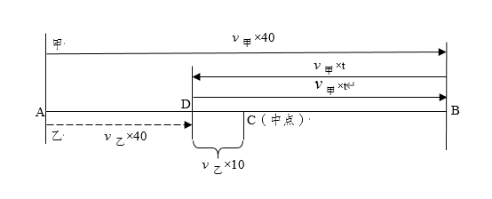
某加工厂要将一批规格相同的三角形铁片裁制成尽可能大的圆形垫片和正方形垫片。如果三角形铁片的三条边长分别为 5 厘米、12 厘米和 13 厘米，那么，裁制而成的正方形垫片边长和圆形垫片直径分别是多少厘米？
A.√60÷7，3 B.60÷17，4 C.60÷17，3 D.√60÷7，4
因 5²+12²=13²，故三角形铁片是直角三角形。如图 1，设最大的正方形边长为 x 厘米，根据△AMN∽△ABC，得 (5−x)÷5=x÷12，解得 x=60÷17；如图 2，设最大的圆半径为 y 厘米，则四边形 ODBF 为正方形，BD=BF=y，AD=5−y。△ADO 与 △AEO 均为直角三角形，且 OD、OE 均为圆的半径，即 OD=OE，故△ADO≌△AEO，则 AE=AD=5−y；同理可得 CE=CF=12−y。又 AC=AE+CE=5−y+12−y=13，解得 y=2，则圆的直径为 4 厘米，故本题选 B。
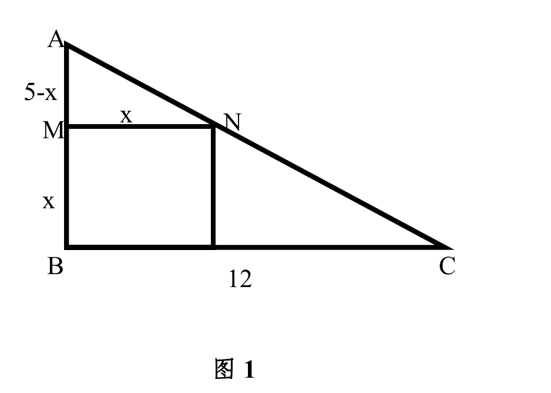
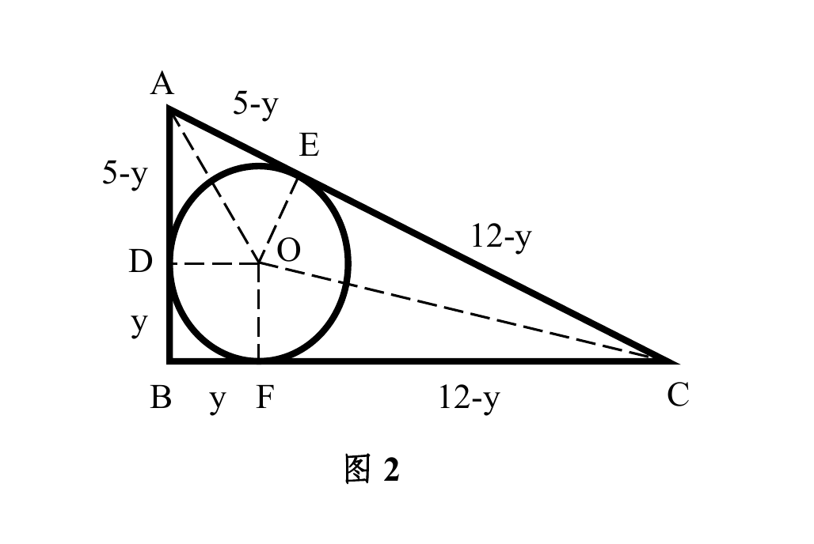
某实验室通过测评Ⅰ和Ⅱ来核定产品的等级：两项测评都不合格的为次品，仅一项测评合格的为中品，两项测评都合格的产品为优品。某批产品只有测评Ⅰ合格的产品数是优品数的 2 倍，测评Ⅰ合格和测评Ⅱ合格的产品数之比为 6∶5。若该批次品率为 10%，则该批产品的优品率为：
A.10% B.15% C.20% D.25%
根据题意，可知只有测评Ⅰ合格的产品数与优品数之比为 2∶1，只有测评Ⅰ合格的产品数与优品数之和就是测评Ⅰ合格的产品数。又知测评Ⅰ合格和测评Ⅱ合格的产品数之比为 6∶5，则可设测评Ⅰ合格和测评Ⅱ合格的产品数分别为 6 份和 5 份。此时只有测评Ⅰ合格的产品数为 6÷(2+1)×2=4 份，则优品数为 2 份，Ⅰ和Ⅱ至少有一个合格的产品数为 4+5=9 份，占比为 1−10%=90%。由此可知这批产品共有 9÷90%=10 份，则该批产品的优品率为 2÷10×100%=20%。
甲、乙两家园林公司共同完成两个项目。已知甲公司单独完成项目Ⅰ需要 3 天，单独完成项目Ⅱ需要 12 天；乙公司单独完成项目Ⅰ需要 5 天，单独完成项目Ⅱ需要 8 天，并且甲公司在开工后的第 2 天，因故停工 1 天。那么，两家公司共同完成两个项目最少需要多少天？
A.6 B.6又2÷5 C.6又27÷40 D.6又9÷10
对于项目Ⅰ，甲的效率大于乙的效率；对于项目Ⅱ，乙的效率大于甲的效率。要想完成项目的时间最少，应让甲做项目Ⅰ、乙做项目Ⅱ，甲完成项目Ⅰ后再去帮助乙一起完成项目Ⅱ。设项目Ⅱ的总工作量为 24 份，则甲、乙完成项目Ⅱ的效率分别为 2 和 3。因为甲开工后停工 1 天，则甲公司完成项目Ⅰ实际用了 4 天。此时乙公司完成项目Ⅱ的工作量为 3×4=12 份，还剩 24−12=12 份的工作量，需要甲、乙合作 12÷(2+3)=12÷5=2.4 天。因此所求为 4+2.4=6.4 天。
从所给四个选项中，选择最合适的一个填入问号处，使之呈现一定规律性：
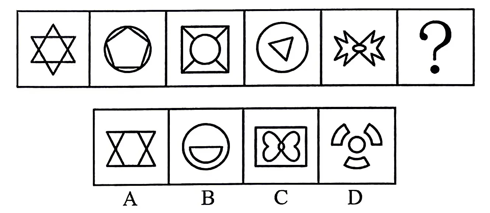
元素组成不同，优先考虑属性规律。题干图形规整，且出现明显的等腰元素，考虑对称性。观察发现，题干图形均为轴对称图形，且对称轴数量分别是 6、5、4、3、2，因此？处图形应仅有 1 条对称轴，只有 B 项符合。故正确答案为B。
从所给的四个选项中，选择最合适的一个填入问号处，使之呈现一定的规律性（ ）。
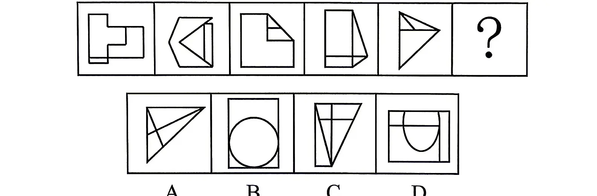
元素组成不同，且无明显属性规律，优先考虑数量规律。观察发现，题干图形被分割，空白封闭区域明显，考虑数面；整体数面没有规律，进一步考虑面的细化。题干图形均含有最大面，且最大面均为轴对称图形，故问号处应选择一个最大面为轴对称图形的图形，只有 B 项符合。故正确答案为 B。
把下面的六个图形分为两类，使每一类都有各自的共同特征或规律，分类正确的一项是（ ）。
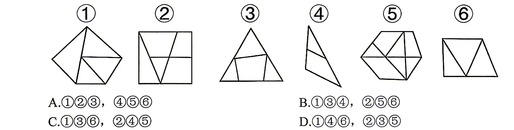
元素组成不同，且无明显属性规律，优先考虑数量规律。观察题干发现，图形分割区域明显，考虑数面。六幅图包含的面的数量分别是：4、5、4、2、7、3，面的数量整体无规律；继续观察发现每幅图形均包含一个明显的外框，六幅图形外框边数分别是：5、4、3、3、6、4，因此，将图形①④⑥（外框边数－内部封闭数=1）一组，图形②③⑤（内部封闭数－外框边数=1）一组。故正确答案为 D。
把下面的六个图形分为两类，使每一类都有各自的共同特征或规律，分类正确的一项是（ ）。
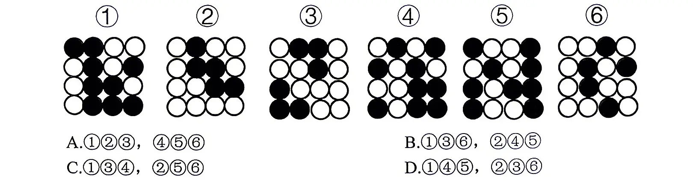
元素组成不同，且无明显属性规律，优先考虑数量规律。观察发现，题干图形均由黑白球构成，考虑数黑白球数量。 ①④⑤黑球数量大于白球数量，②③⑥白球数量大于黑球数量。即①④⑤一组，②③⑥一组。故正确答案为D。
把下面的六个图形分为两类，使每一类都有各自的共同特征或规律，分类正确的一项是（ ）。
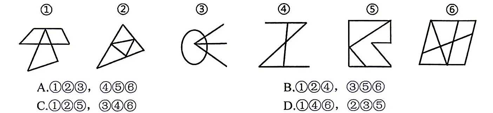
元素组成不同，且无明显属性规律，优先考虑数量规律。观察发现，题干图形出现“圆相交”变形图、多端点，优先考虑笔画数。①②⑤均为 1 笔画图形，③④⑥均为 2 笔画图形。即①②⑤一组，③④⑥一组。故正确答案为 C。
左边给定的是一个立方体，右边哪一项可能是它的外表面展开图？
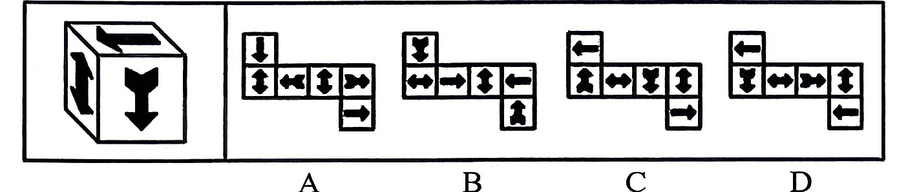
纸盒展开图题需要先根据已知立方体三面顶点的位置确定展开图。选定一个参照面，判断选项展开面是否正确；以竖箭头面为参照面，确定顶面，再判定剩余面位置是否正确。A 项根据参照面确定顶点后，可判断另外面与立体图位置不对；B 项另外面位置不对；C 项另外面位置不对；D 项上面点（红点）三面正确，下面（蓝点）标准的三面位置不对。因此正确答案是 D。关键对照图见下方原卷解析图。
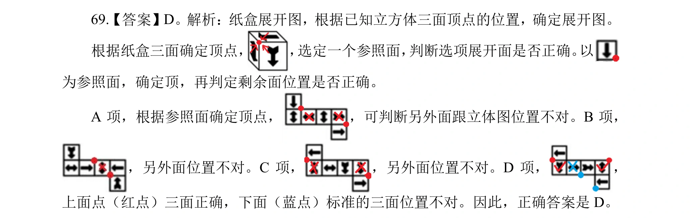
左边的立体图形是由①、②和③组成的，下列哪项可以填入问号处（ ）。
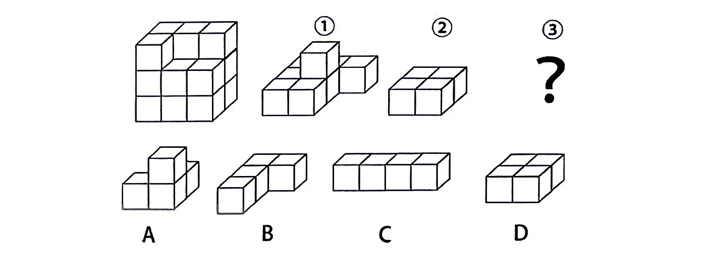
立体图形大致是一个 3×2×3 的长方体，首先可以排除 C 选项。①和②拼合之后如图所示。A 选项拼合后与立体图形不一致，排除；B 选项拼合后与立体图形一致，当选，转动后也能得到目标形状；C 选项长柱由 4 个小正方体组成，明显无法拼合，排除；D 选项拼合后与立体图形不一致，排除。故正确答案为 B。
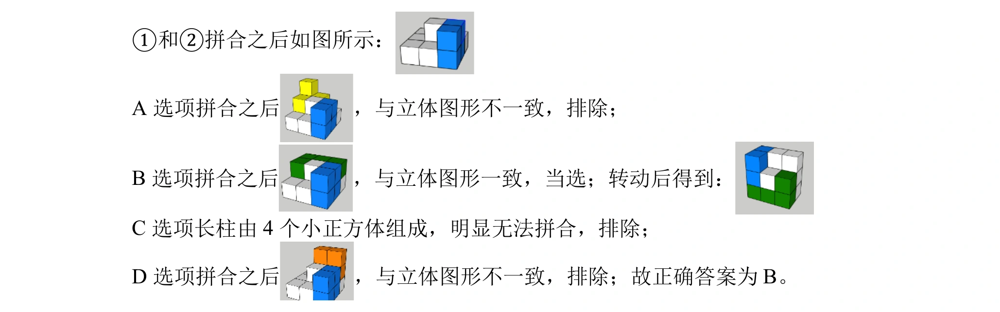
探索性调研是在调研专题的内容与性质不太明确时，调查人员为了了解问题的性质，确定调研方向与范围而进行的收集初步资料的调查；描述性调研是对市场上存在的客观情况如实地加以描述和反映，从中找出各种因素的内在联系，回答“是什么”的问题。根据上述定义，下列属于探索性调研的是：
A.某APP通过让顾客填写在线问卷，同时收集客户后台数据，了解到其主要顾客为18~35岁群体
B.某咖啡品牌发现，只要在线上推出团购链接，其销售额就会显著增加，因此得出结论，团购会促进营业额上升
C.某研究人员对高校辍学现象比较感兴趣，于是访谈了学校辅导员、教师和辍学学生，而后确定了具体的研究方向
D.研究者通过分析5000万条最频繁检索的词汇，与季节性流感传播时期的数据进行比较，成功预测了冬季流感的传播趋势
探索性调研：“在调研专题的内容与性质不太明确时”、“为了了解问题的性质，确定调研方向与范围而进行的收集初步资料的调查”；描述性调研：“对市场上存在的客观情况如实地加以描述和反映”、“从中找出各种因素的内在联系”。A 项：某APP 通过让顾客填写在线问卷和收集客户后台数据，了解到其主要顾客为18~35 岁群体，只是对顾客年龄段这个客观情况如实地加以描述，符合“对市场上存在的客观情况如实地加以描述和反映”、“从中找出各种因素的内在联系”，符合“描述性调研”定义，不符合“探索性调研”定义，排除；B 项：某咖啡品牌发现，只要在线上推出团购链接，其销售额就会显著增加，不明确是否为主动调研，不符合“在调研专题的内容与性质不太明确时”、“为了了解问题的性质，确定调研方向与范围而进行的收集初步资料的调查”，不符合“探索性调研”定义，排除；C 项：某研究人员对高校辍学现象比较感兴趣，不明确具体调研关于高校辍学的哪些内容，符合“在调研专题的内容与性质不太明确时”，于是访谈了学校辅导员、教师和辍学学生，而后确定了具体的研究方向，符合“为了了解问题的性质，确定调研方向与范围而进行的收集初步资料的调查”，符合“探索性调研”定义，当选；D 项：研究者通过分析 5000 万条最频繁检索的词汇，与季节性流感传播时期的数据进行比较，调研的目的就是为了预测冬季流感的传播趋势，不符合“在调研专题的内容与性质不太明确时”，不符合“探索性调研”定义，排除。故正确答案为 C。
本证是指负有证明责任的当事人提出的用以证明其主张的证据材料；反证是指不负证明责任的当事人为推翻对方的主张，提出的证明相反事实存在的证据材料。根据上述定义，下列乙方提出的证据材料属于反证的是：
A.甲指控乙提供的服务未达到合同约定的标准，提交了服务合同和现场照片，乙回应称服务过程中存在不可抗力因素，提交了相关新闻报道
B.甲投资者指控乙公司在财务报告中进行虚假陈述，导致其投资亏损，乙公司提交了与财务报告相关的独立审计报告、银行流水和税务记录等
C.甲主张被告乙在社交媒体上发布了损害其名誉的言论，乙则提交了甲之前在其他社交媒体上发布的类似或更恶劣的言论截图
D.甲公司诉乙未按时交货，提交合同文本为证，乙回应称已交货，提供了交货给丙公司的相关凭证
本证：“负有证明责任的当事人”、“提出的用以证明其主张的证据材料”；反证：“不负证明责任的当事人”、“提出的证明相反事实存在的证据材料”。A 项：甲指控乙提供的服务未达到合同约定的标准，故甲负有举证责任，乙符合“不负证明责任的当事人”，乙方提出的证据材料是不可抗力因素相关新闻报道，无法证明乙是否达到合同约定的标准，不符合“提出的证明相反事实存在的证据材料”，不符合“反证”定义，排除；B 项：甲指控乙在财务报告中进行虚假陈述，故甲负有举证责任，乙符合“不负证明责任的当事人”，乙方提出的证据材料是与财务报告相关的独立审计报告、银行流水和税务记录等，其目的是通过展示公司财务的规范和真实情况，反驳甲主张的“乙公司在财务报告中进行虚假陈述”这一事实，即证明该相反事实存在，符合“提出的证明相反事实存在的证据材料”，符合“反证”定义，当选；C 项：甲主张乙在社交媒体上发布了损害其名誉的言论，故甲负有举证责任，乙符合“不负证明责任的当事人”，乙方提出的证据材料是甲发布过的类似或更恶劣的言论截图，无法证明乙是否损害甲的名誉，不符合“提出的证明相反事实存在的证据材料”，不符合“反证”定义，排除；D 项：甲诉乙未按时交货，故甲负有举证责任，乙符合“不负证明责任的当事人”，乙方提出的证据材料是交货给丙公司的相关凭证，并未提出交货给甲的凭证，不符合“提出的证明相反事实存在的证据材料”，不符合“反证”定义，排除。故正确答案为 B。
纵向谈判是指在确定谈判的主要问题后，逐个讨论每一问题和条款，讨论一个问题，解决一个问题，一直到谈判结束。横向谈判是指在确定谈判所涉及的主要问题后，开始逐个讨论预先确定的问题，在某一问题上出现矛盾或分歧时，就把这一问题放在后面，讨论其他问题，如此周而复始地讨论下去，直到所有内容都谈妥为止。根据上述定义，下列属于纵向谈判的是：
A.产品采购方和供货方进行谈判，采购方明确产品质量必须高标准，任何谈判条件都让位于质量
B.在资金借贷谈判中，涉及金额、利率、期限、担保等问题，双方在贷款期限上未达成一致意见，便先讨论其他问题，最后再讨论贷款期限
C.一项产品交易谈判，双方确定了价格、质量、运输、保险、索赔等几项内容后，开始就价格进行磋商，如果价格确定不下来，就不谈其他条款
D.K国和F国谈判时，内容涉及领土、贸易往来、科技、医疗等多个领域，双方决定从较不关键的领域开始谈起，争取达成一致建立善意
纵向谈判：“在确定谈判的主要问题后，逐个讨论每一问题和条款”、“讨论一个问题，解决一个问题，一直到谈判结束”；横向谈判：“在确定谈判所涉及的主要问题后，开始逐个讨论预先确定的问题”、“在某一问题上出现矛盾或分歧时，就把这一问题放在后面，讨论其他问题，如此周而复始地讨论下去，直到所有内容都谈妥为止”。A 项：采购方明确产品质量必须高标准，任何谈判条件都让位于质量，但不明确是否为讨论一个问题，解决一个问题，不符合“讨论一个问题，解决一个问题，一直到谈判结束”，不符合“纵向对比”定义，排除；B 项：双方在贷款期限上未达成一致意见，便先讨论其他问题，最后再讨论贷款期限，不符合“讨论一个问题，解决一个问题，一直到谈判结束”，不符合“纵向对比”定义，排除；C 项：一项产品交易谈判，双方确定了价格、质量、运输、保险、索赔等几项内容后，开始就价格进行磋商，符合“在确定谈判的主要问题后，逐个讨论每一问题和条款”，如果价格确定不下来，就不谈其他条款，符合“讨论一个问题，解决一个问题，一直到谈判结束”，符合“纵向对比”定义，当选；D 项：K 国和 F 国决定从较不关键的领域开始谈起，争取达成一致建立善意，但不明确是否为讨论一个问题，解决一个问题，不符合“讨论一个问题，解决一个问题，一直到谈判结束”，不符合“纵向对比”定义，排除。故正确答案为C。
载损鉴定是指船方为了明确所承运的货物是否发生了残损，以及残损责任是否属于船方，而向商检机构申请在其卸货过程中检查货物情况，给予公正的鉴定。根据上述定义，下列属于载损鉴定范畴的是：
A.甲船向商检机构申请检查船舶卸货前舱口、风筒的封盖和封识情况，以鉴定货物受损的原因
B.乙船向商检机构申请检查舱内货物清单是否与报关清单一致，鉴定货物是否完整
C.丙船向商检机构申请对比装船储罐前检尺及储罐后检尺，以计算输油软管破裂造成的油品泄漏量
D.丁船与戊船相撞后，向商检机构申请检查船体的故障原因，评估船体的技术状况
“为了明确所承运的货物是否发生了残损，以及残损责任是否属于船方”。A 项：甲船向商检机构申请检查船舶卸货前舱口、风筒的封盖和封识情况，以鉴定货物受损的原因，是为了明确残损的责任方，符合“为了明确所承运的货物是否发生了残损，以及残损责任是否属于船方”，符合定义，当选；B 项：乙船向商检机构申请检查舱内货物清单是否与报关清单一致，是为了鉴定货物是否完整，并不是为了明确残损责任方，不符合“为了明确所承运的货物是否发生了残损，以及残损责任是否属于船方”，不符合定义，排除；C 项：丙船向商检机构申请对比装船储罐前检尺及储罐后检尺，是为了计算输油软管破裂造成的油品泄漏量，并不是为了明确残损责任方，不符合“为了明确所承运的货物是否发生了残损，以及残损责任是否属于船方”，不符合定义，排除；D 项：丁船向商检机构申请检查船体的故障原因，是为了评估船体的技术状况，并不是为了明确残损责任方，不符合“为了明确所承运的货物是否发生了残损，以及残损责任是否属于船方”，不符合定义，排除。故正确答案为 A。
扬汤：止沸
A.掩耳：盗铃 B.画蛇：添足 C.绝薪：止火 D.对牛：弹琴
判断题干词语间逻辑关系：扬汤止沸意思是把沸水舀起来再倒回去，以图阻止住沸腾。比喻不成功的补救办法，办法不彻底，不能从根本上解决问题。扬汤是为了止沸，二者为方式与目的的对应关系，且通过扬汤的方式不能达到止沸的目的。A 项：掩耳盗铃意思是偷铃铛怕别人听见而捂住自己的耳朵，比喻自己欺骗自己，明明掩盖不住的事情偏要想法子掩盖。掩耳是为了盗铃，二者为方式目的对应关系，且通过掩耳的方式不能达到盗铃的目的，与题干逻辑关系一致，当选；B 项：画蛇添足意思是画蛇时给蛇添上脚，比喻做了多余的事，非但无益，反而不合适，二者不是方式目的的对应关系，与题干逻辑关系不一致，排除；C 项：绝薪止火意思是断绝柴草，使火停止燃烧，比喻从根本上彻底解决问题，绝薪是为了止火，二者为方式目的对应关系，但通过绝薪的方式能够达到止火的目的，与题干逻辑关系不一致，排除；D 项：对牛弹琴比喻对不讲道理的人讲道理，对不懂得美的人讲风雅，也用来讥讽人讲话时不看对象，二者不是方式目的的对应关系，与题干逻辑关系不一致，排除。故正确答案为 A。
相夫教子：夫子
A.循规蹈矩：规矩 B.投桃报李：桃李 C.借古讽今：古今 D.拉帮结派：帮派
判断题干词语间逻辑关系：“相夫教子”意思是辅助丈夫、教育孩子，“夫子”意思是对年长而学问好的人的尊称，“相夫教子”中的夫子和夫子本身意思不同。A 项：“循规蹈矩”指遵守规矩，“循规蹈矩”中的规矩和规矩本身意思相同，与题干逻辑关系不一致，排除；B 项：“投桃报李”指投给对方一个桃子，对方回报一个李子。比喻彼此善来善往，以礼相待。桃李比喻老师辛勤栽培的学生，“投桃报李”中的桃李和桃李本身意思不同，与题干逻辑关系一致，当选；C 项：“借古讽今”意思是借评论古代的人和事来评论现实，“古今”指“古代和现代”，“借古讽今”中的古今和古今本身意思相同，与题干逻辑关系不一致，排除；D 项：“拉帮结派”意思是组织帮派，搞小集团活动，“帮派”意思是指在组织内部拉帮结伙进行非组织活动的小集团，“拉帮结派”中的帮派和帮派本身意思相同，与题干逻辑关系不一致，排除。故正确答案为 B。
汗青：史册
A.手足：兄弟 B.家乡：故里 C.耳目：打探 D.孺子牛：吃苦耐劳
判断题干词语间逻辑关系：“汗青”古人用青竹片做书写材料，新竹含水分，直接写容易晕墨、招虫蛀，用火把竹片烤一烤，水分渗出像出汗，就叫“汗青”，这道处理也常叫“杀青”。后来，古代国家大事、历史记录多写在竹简上，“汗青”从“处理过的竹简”，慢慢变成“写下的历史记录”，成为史册、史书的雅称。本义和延伸意不同，史册是汗青的延伸意或指代义。A 项：手足代指兄弟，二者为比喻象征关系，与题干逻辑关系一致，当选；B 项：故里的意思是家乡，二者为全同关系，与题干逻辑关系不一致，排除；C 项：耳目比喻替人打探消息的人，而非打探，与题干逻辑关系不一致，排除；D 项：孺子牛比喻吃苦耐劳的人，而非吃苦耐劳，与题干逻辑关系不一致，排除。故正确答案为 A。
书法：紧密：疏朗
A.流放者：沮丧：悲壮 B.青年：风度翩翩：大腹便便 C.舞蹈：莺歌燕舞：婆娑起舞 D.身形：娇小玲珑：虎背熊腰
判断题干词语间逻辑关系：紧密和疏朗分别是书法的两种形态，紧密和疏朗与书法均为形态的对应关系；且紧密和疏朗为反义关系。A 项：沮丧和悲壮可以是流放者的两种情绪，沮丧和悲壮与流浪者均是情绪与人物的对应关系，且沮丧与悲壮不是反义关系，与题干逻辑关系不一致，排除；B 项：风度翩翩主要形容男子的举止洒脱，与青年没有明确的逻辑关系，大腹便便可以是青年的一种形态，但风度翩翩与大腹便便不是反义关系，与题干逻辑关系不一致，排除；C 项：莺歌燕舞是形容春天鸟儿喧闹活跃的景象，与舞蹈没有明确的逻辑关系，婆娑起舞可以是舞蹈的一种形态，但莺歌燕舞与婆娑起舞不是反义关系，与题干逻辑关系不一致，排除；D 项：娇小玲珑形容身形小巧，虎背熊腰形容身形魁梧健壮，二者与身形均是形态的对应关系；且娇小玲珑和虎背熊腰为反义关系，与题干逻辑关系一致，当选。故正确答案为 D。
研究人员发现，摄入高盐饮食的小鼠对抗由大肠杆菌引起的肾脏感染和由李斯特细菌引发的全身感染的能力较弱。随后，他们在正常饮食基础上，每天给10名20至50岁的健康男女额外增加6克盐。一周后，与服用额外食盐之前相比，这些人体内一些免疫细胞（中性粒细胞）吞噬和杀死细菌的能力大大受损。研究人员得出结论，高盐饮食可能损害人体抵抗细菌感染的能力。以下哪项不能支持上述结论（）。
A.当人体内盐含量高时，尿素会积聚在肾脏内，而尿素会抑制中性粒细胞
B.对50岁以上有基础疾病的男女进行相同的研究发现，男性因高盐饮食造成的疾病负担高于女性
C.摄入过量盐分时，身体会释放激素，使人体排泄更多盐。这些激素包括皮质激素，具有抑制全身免疫系统的副作用
D.对20岁以下健康男女进行相同的研究发现，这些人体内的部分免疫细胞吞噬和杀死细菌的能力受损程度高于高年龄段人群
题干结论：高盐饮食可能损害人体抵抗细菌感染的能力。论据：实验对比，在正常饮食基础上，每天给10 名 20 至 50 岁的健康男女额外增加6 克盐。一周后，与服用额外食盐之前相比，这些人体内一些免疫细胞（中性粒细胞）吞噬和杀死细菌的能力大大受损。A 项：该项说明人体含盐量高会使尿素积聚，进而抑制中性粒细胞，解释原因，可以加强，排除；B 项：该项对比男性和女性患病的负担，而题干说的是含盐量高对抵抗细菌感染能力的影响，话题不一致，无法加强，当选；C 项：该项说明含盐量高会使身体释放激素，进而抑制免疫系统，解释原因，可以加强，排除；D 项：该项对 20 岁以下的健康人群做相同实验，结果免疫细胞受损程度高于高龄人，举例说明对各年龄段人群，含盐量高都会损害抵抗细菌感染的能力，可以加强，排除。本题为选非题，故正确答案为 B。
如下图所示的 5×5 方格被分成了 5 个粗线框成的区域，在每个方格中填入金、木、水、火、土五个汉字当中的一个，保证每行、每列和每个粗线框成的区域所填汉字均不相同。
由此可以推出：
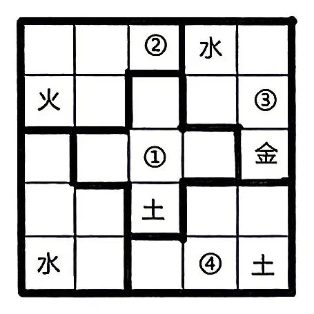
A.①处填火 B.②处填木 C.③处填水 D.④处填金
要求“每行、每列和每个粗线框成的区域所填汉字均不相同”，所以第三行的空格处不能是金，可以确定①上方的格子为金；③处的汉字不是金、水、火、土，显然③处填木；③上方不能是水、木、金、土，只能填火；②不能是水、火、金、土，只能填木。其余区域按约束填入后如原卷图所示。①处填水，②处填木，③处填木，④处填木。故本题选择 B 项。
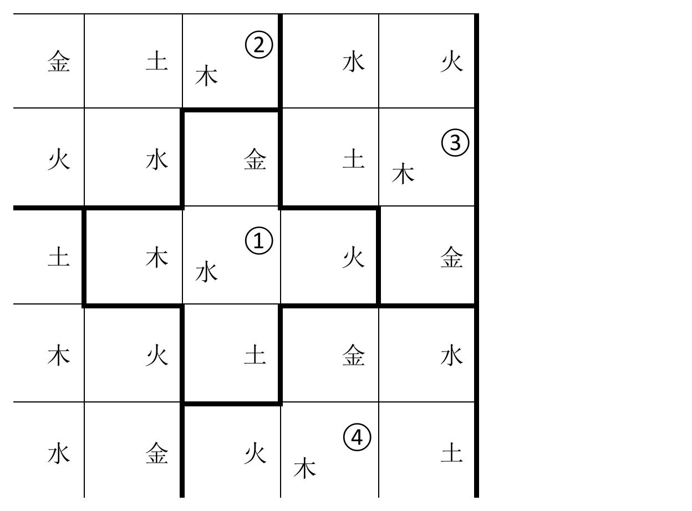
近期，新能源汽车得到了我国政府更多政策和技术支持。其中，原计划今年年底到期的新能源汽车购置补贴和免征车辆购置税两项优惠政策再延长两年。而且不少充电设施建设项目已经陆续开工建设，预计今年全年能够完成投资100亿元左右，新增公共桩大概在20万个左右，新增私人桩大概能超过40万个，公共充电站达到4.8万座。整体来看，我国新能源汽车未来的发展趋势会一片向好。以下哪项如果为真，最能支持上述论证？
A.新能源汽车的优惠政策确实能为普通民众减轻生活支出压力，有延长的必要性
B.决定新兴事物发展的因素包括：发展环境的变化以及是否优越于旧事物
C.调查发现，2020年第一季度新能源汽车销量为27.42万辆，同比增长95%
D.充电设施建设计划在居民区尤其是老旧小区，充电桩能支持多车一桩，邻近车位还能够共享充电
题干论证主线为：新能源汽车购置补贴和免征车辆购置税两项优惠政策再延长两年，而且充电设施建设项目已经陆续开工建设。→我国新能源汽车未来的发展趋势会一片向好。A 项，优惠税收政策有延长的必要性，与结论新能源汽车未来发展趋势无关，排除。B 项，发展环境及是否优于旧事物，影响新兴事物的发展，充电设施建设项目的建成说明新能源汽车发展环境变化，有针对新能源汽车的税收优惠政策说明在这方面优于汽油汽车，则新能源汽车的未来会有较好的发展，建立论据和结论的联系，保留。C 项，2020 年新能源汽车的发展情况，不能说明未来发展的好坏，不能支持，排除。D 项，说明充电设施建设项目能够普及到位，加强了题干论据，但与B 比较，支持力度较弱，排除。故本题选择 B 项。
当直播带货在网络视频端成为普遍现象时，相应的监管规则还不完善，加之较低的行业准入门槛，五花八门的直播带货令人眼花缭乱。虚假宣传、伪劣产品、数据造假、售后服务跟不上和维权难等问题也随之发生，不少带货名家都曾经现场翻车，所以只有落实监管，才会让这个行业更规范，更有标准性，才能良性发展。落实市场监管，不是一味强调政府要严格管理责任，而是控制电商直播产业野蛮生长的必然要求。对于新兴的直播带货模式，市场监管必须及时跟上。由此可以推出：
A.因为监管规则的不完善，直播带货行业中虚假宣传、维权难等现象时有发生
B.只有落实市场监管并且控制电商直播产业野蛮生长才能使整个行业良性发展
C.控制电商直播行业野蛮生长不能一味强调政府要严格管理责任
D.除非落实市场监管，否则就无法控制电商直播产业的野蛮生长
题干中的逻辑关系可写为：良性发展⇒直播行业更规范、更有标准⇒落实监管控制电商直播行业野蛮生长⇒落实市场监管A 项，根据“相应的监管规则还不完善，加之较低的行业准入门槛……和维权难等问题也随之发生”可知，直播带货行业维权难的原因是监督规则不完善以及行业准入门槛低，选项中因果关系不准确，排除。B 项，逻辑关系可写为：行业良性发展⇒落实市场监管且控制电商直播产业野蛮生长，与题干逻辑关系不同，不能推出，排除。C 项，题干“落实市场监管，不是一味强调政府要严格管理责任”，而非“控制电商直播行业野蛮生长不能一味强调政府要严格管理责任”，C 项错误，排除。D 项，逻辑关系可写为：控制电商直播行业野蛮生长⇒落实市场监管，与题干逻辑关系一致，当选。故本题选择 D 项。
2019 年我国农民工规模继续扩大，总量达到 29077 万人，同比增长 0.8%。其中，本地农民工 11652 万人，比上年增加 82 万人；外出农民工 17425 万人，比上年增加 159 万人。外出农民工中，在省内就业的农民工 9917 万人，比上年增加 245 万人；跨省流动农民工 7508 万人，比上年减少 86 万人。
从收入看，农民工集中就业的六大行业月均收入均稳定增长。2019 年农民工月均收入约 4000 元；其中外出农民工月均收入 4427 元，比上年增加 320 元；本地农民工月均收入 3500 元，比上年增加 160 元。分区域看，在东部地区就业的农民工月均收入 4222 元，比上年增长 6.8%；在中部地区就业的农民工月均收入 3794 元，比上年增长 6.3%；在西部地区就业的农民工月均收入 3723 元，比上年增长 5.7%；在东北地区就业的农民工月均收入 3469 元，同比增长 5.2%。
图 2015-2019 年我国农民工规模及增速（保留卷面原图）
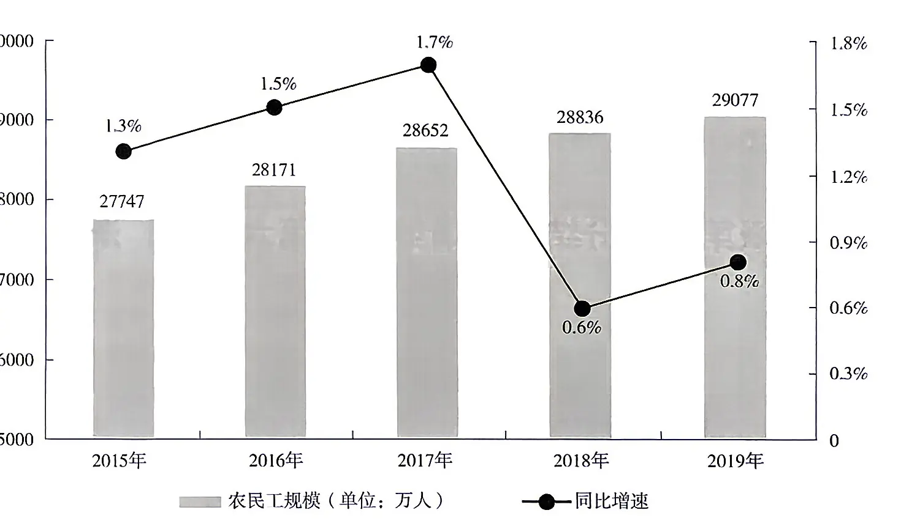
表 六大行业农民工月均收入（单位：元；数值据原表逐格核对）
| 行业 | 2019 年 | 2018 年 |
|---|---|---|
| 制造业 | 3958 | 3732 |
| 建筑业 | 4567 | 4209 |
| 批发和零售业 | 3472 | 3263 |
| 交通运输仓储邮政业 | 4667 | 4345 |
| 住宿餐饮业 | 3289 | 3148 |
| 居民服务修理和其他服务业 | 3337 | 3202 |
2019 年，下列行业中农民工月均收入同比增加最多的是：
A.制造业 B.建筑业 C.批发和零售业 D.交通运输仓储邮政业
由表格最后两列数据可知，2019 年制造业农民工月均收入同比增加 3958−3732=2XX 元，建筑业同比增加 4567−4209=358 元，批发和零售业同比增加 3472−3263=2XX 元，交通运输仓储邮政业同比增加 4667−4345=322 元。2019 年农民工月均收入同比增加最多的行业是建筑业。故本题选 B。
2025 年保险公司原保险保费收入 24282.52 亿元，同比增长 20.00%，比上一年高 2.51 个百分点，其中，产险业务原保险保费收入 7994.97 亿元，同比增长 10.99%；寿险业务原保险保费收入 13241.52 亿元，同比增长 21.46%；健康险业务原保险保费收入 2410.47 亿元，同比增长 51.87%；意外险业务原保险保费收入 635.56 亿元，同比增长 17.14%。
2025 年保险公司赔款和给付支出 8674.14 亿元，同比增长 20.20%，其中，产险业务赔款 4194.17 亿元，同比增长 10.72%；寿险业务给付 3565.17 亿元，同比增长 30.67%；健康险业务赔款和给付 762.97 亿元，同比增长 33.58%；意外险业务赔款 151.84 亿元，同比增长 18.24%。
截至 2025 年末，保险公司资金运用余额 111795.49 亿元，较年初增长 19.81%。其中，银行存款 24349.67 亿元，占比 21.78%；债券 38446.42 亿元，占比 34.39%；股票和证券投资基金 16968.99 亿元，占比 15.18%；其他投资 32030.41 亿元，占比 28.65%。
截至 2025 年末，保险公司总资产 123597.76 亿元，较年初增长 21.66%。其中，产险公司总资产 18481.13 亿元，较年初增长 31.43%；寿险公司总资产 99324.83 亿元，较年初增长 20.41%；再保险公司总资产 5187.38 亿元，较年初增长 47.64%；资产管理公司总资产 352.39 亿元，较年初增长 46.44%。
2025 年，四大保险业务中，原保险保费收入占比最高值与最低值相差约：
A.40% B.45% C.50% D.55%
由材料可知，2025 年保险公司原保险保费收入 24282.52 亿元，产险业务 7994.97 亿元、寿险业务 13241.52 亿元、健康险业务 2410.47 亿元、意外险业务 635.56 亿元。保费收入最高的是寿险业务，最低的是意外险业务，故所求为 (13241.52−635.56)÷24282.52≈12605.96÷24300≈52%，选择最接近的 C。